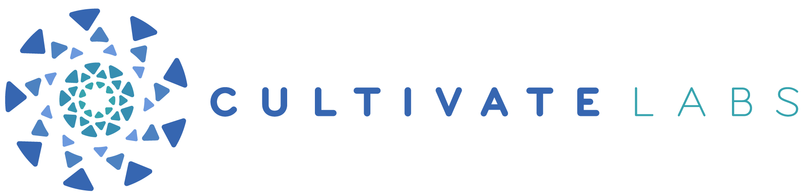

{{ p.lead }} {{ p.text }}
{{ p.lead }} {{ p.text }}
Tariffs are high and change without warning. Terms are imposed one-sidedly and revised repeatedly. The legal basis is contested or rewritten mid-course. Dispute channels get bypassed. Trade shrinks or reroutes elsewhere, and economic measures are used as leverage.
Tariffs are low, steady, and announced ahead of time. Everyone is treated consistently. Nobody disputes who has the authority to set the rules. Arguments go through agreed channels and get settled. Trade grows year on year, and neither side uses economic pressure as a bargaining chip.
{{ questionCount }} forecasts are grouped into {{ driverCount }} drivers. The forecasts produce each driver reading, and those readings produce CHIP. Select a driver to see the forecasts behind it.
{{ compositeExplanation }}
{{ activeDriver.questionCountLabel }}. Expand a forecast to see its source data and full probability distribution.
{{ q.stem }}
{{ q.src }}
A forecast is cancelled rather than resolved if the thing it measures ceases to exist in a way that makes it unanswerable.
The current-state index maps published conditions to fixed buckets. The forward-state index uses Hinsley’s AI probabilities across those same buckets at one future date. Shared drivers and weights make the spread directly comparable.
The full methodology is published alongside the readings: reference states, drivers, indicators, questions, weights, the background layer, and every change over time. Two readings are published for every index: the Current-State Index (CSI), which shows today's conditions, and the Forward-State Index (FSI), which shows the forecast.
This first edition is AI-designed. We asked Hinsley to decompose {{ systemName }} into possible drivers, observable signals and forecast questions, then asked it to prioritize and narrow that list. The resulting design has {{ driverCount }} drivers, {{ questionCount }} current-state signals, {{ questionCount }} scored forecast questions and {{ backgroundCount }} additional background questions that do not enter the index.
We also asked Hinsley to recommend the reference states, answer buckets, 0–100 outcome scores, driver weights and forecast-question weights.
Cultivate Labs reviews whether the questions are legitimate, clear, measurable, resolvable and supported by appropriate sources. That review does not replace Hinsley's substantive content or weighting recommendations with human judgments.
There is no human forecasting panel in this edition. Every forward probability shown on the site is the Hinsley aggregate. Cultivate Labs publishes the source forecasts and will score them against observed outcomes as they resolve.
These are the fixed anchors both readings are measured against. A reading of 100 means conditions match the healthy state, 0 means they match the stressed state, and 50 means equidistant between them. Neither state is utopian or catastrophic.
Barriers low, stable, and announced in advance. Treatment settled and consistently applied. Legal authority undisputed. Disputes resolved through agreed channels. Flows grow steadily. Neither side uses economic measures as leverage.
Barriers high and revised without notice. Treatment imposed unilaterally and changed repeatedly. Legal basis contested or rebuilt mid-course. Dispute channels bypassed. Flows contract sharply or reroute. Economic measures used as leverage.
Reference states are fixed at launch and do not typically change. If they do, weights are re-evaluated and the index may need to be re-run entirely. Both the CSI and the FSI are measured against the same two states, which is what makes them directly comparable and the spread meaningful.
Both readings are published to one decimal place. A reading of 50 does not mean average; it means the state sits midway between the two reference states. Each reading is a position on a fixed scale, not a change from a starting point.
The difference between the FSI and CSI is described with the same seven labels in every CHIP index. A small neutral zone prevents immaterial differences from being presented as meaningful movement. Labels are assigned mechanically from the point spread and are never changed editorially.
Each index breaks its system into a small set of structural drivers, the underlying forces that move it toward or away from the reference states. Each driver carries one or more questions. The driver-to-question relationship is one-to-many: in the {{ indexName }}, {{ driverCount }} drivers carry {{ questionCount }} questions between them.
Forecast probabilities are displayed as whole percentages using sum-preserving rounding, so each distribution still totals 100%. All index calculations use the original unrounded Hinsley probabilities.
Weighted average of driver positions, using cross-driver weights that sum to 1.00.
Weighted average of its question positions, using question weights that sum to 1.00 inside each driver.
Yes/no questions, or questions with more than two possible answers. Each outcome carries a position between 0 and 100. Positions need not be evenly spaced.
For the CSI, a question's position is the bucket the current state occupies, read from published values. For the FSI, it is the probability-weighted average of its bucket positions from the forecast. Both legs use the same aggregation and the same weights. If a question has to be dropped, its share is spread across the other questions in that driver.
The weights in this edition are Hinsley's recommendations, not human expert judgments. We asked Hinsley to recommend the relative importance of the five drivers and, within each driver, the relative importance of its forecast questions. Cultivate Labs checked that the resulting structure was internally consistent and reviewable, but did not replace the AI's content decisions. Weights are fixed at launch and are not adjusted in response to short-term index movements.
The background layer holds forecast questions that matter for interpretation but never enter the index. They are never weighted or summed into today's reading, the forecast or the spread. Hinsley uses them as context when producing the scored forecasts, and readers can use them to make sense of the numbers. Background forecasts are refreshed quarterly with an approximately twelve-month horizon; each monthly scored forecast uses the newest available background cohort. A healthy-looking index sitting next to a rising disruption risk is exactly what the layer is there to surface.
The two legs are asymmetric, and the disclosure matters. Only the FSI is a forecast, so only the FSI accumulates a calibration track record: at question level, how closely its bucket probabilities matched what actually happened; at composite level, the FSI error series against the realized CSI. The CSI is calculated directly from published figures, so there is nothing to forecast and nothing to get wrong.
Today's FSI is the expected value of the CSI that will be read at the horizon, not a point prediction. A single realized CSI differing from the FSI is not evidence of miscalibration; only the distribution of errors over many resolutions is informative. Spread validation is published as a monthly numeric series at composite and driver level, reporting mean error, and comparing the forecast against simply assuming nothing changes.
The index is not a prediction that any specific event will occur, and is not investment or legal advice.
{{ backgroundCount }} forecast questions that matter for interpretation but never enter the index. They are never weighted or summed into today's reading, the forecast or the spread. Hinsley uses them as context for the scored forecasts, and readers can use them to make sense of the numbers. The background cohort is refreshed {{ backgroundCadence }}; these aggregates are from {{ backgroundForecastDate }}.